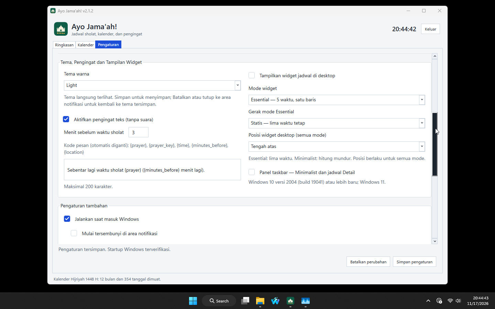
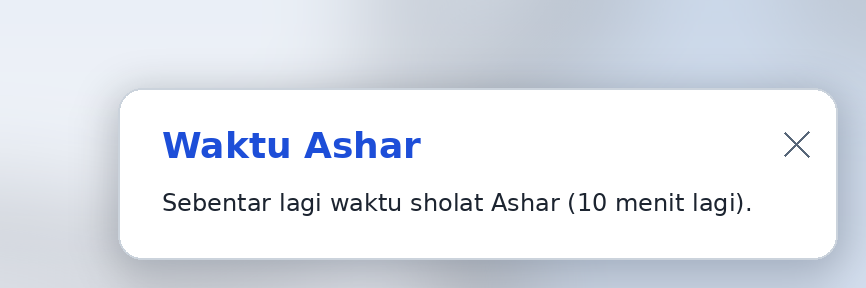

Ayo Jama'ah!
Jadwal sholat, kalender Hijriyah, widget, dan pengingat teks tanpa suara untuk Windows. Perhitungan jadwal dilakukan lokal lewat core Rust.
Build saat ini belum ditandatangani, jadi Windows SmartScreen bisa menampilkan peringatan. Unduhan selalu mengarah ke rilis terbaru.

Tangkapan layar




Pengingat sebelum waktu sholatmock-up
Beberapa menit sebelum waktunya, pengingat muncul di pojok kanan bawah layar. Teks saja, tanpa suara atau adzan. Bisa langsung ditutup, dan hilang sendiri setelah 12 detik.

Gambar di atas mock desain, bukan tangkapan layar asli. Jam, nama sholat, dan isi pesannya hanya contoh. Jumlah menit dan isi pesan sebenarnya bisa diatur sendiri.
Fitur utama
- Jadwal sholat harian dengan pilihan metode perhitungan, zona waktu, dan koreksi menit.
- Kalender Masehi dan Hijriyah.
- Widget Essential, Minimalist, dan Detail dengan beberapa tema.
- Pengingat teks tanpa suara/adzan.
- Lokasi manual, perkiraan jaringan, atau Windows Location Services.
- Pencarian nama permukiman offline memakai data GeoNames.